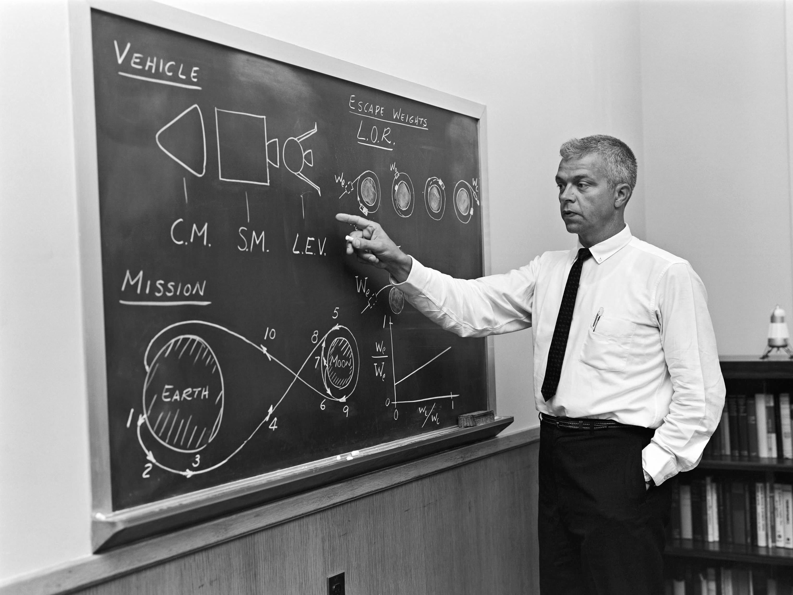

SPACE RACE
How It Began
1955
Soviet Union
takes the lead

October 1957
U.S. Panics!


Half a year later...
The U.S. government establishes the National Aeronautics and Space Administration,
or NASA for short.
April 1958
Поехали!
Yuri Gagarin
first person in space
April 1961
We choose to go to the
MOON
September 1962
Gemini & Apollo
programs


Some
Basics

Rocketry
Launch
- Thrust energy >> rocket weight
- Parabolic trajectory
- Two or more stages
- Different boosters per stage

Orbital Mechanics
Spacecrafts
- Orbit above 160km (LEO)
- Velocity: ~28128 km/h
- More height -> less speed needed
Gemini Missions
- Orbital Maneuvers
- Human Spaceflight Endurance
- Space Rendezvous
- Docking between Spacecrafts
- EVA
1963 - 1967
Saturn V
- Height: 110.6m
- Weight: 2,970,000kg
- Thrust (1st stage): 34,020kN
- Payload (LEO): 140,000kg
- ~3 million components
Apollo
Missions
1968 - 1973
The Journey